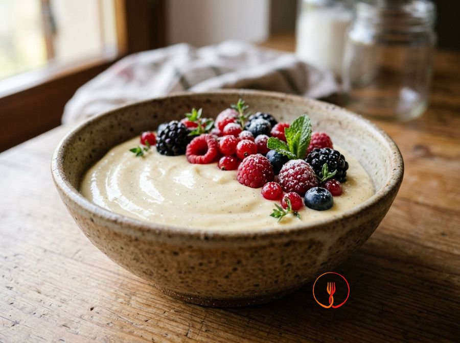

Crema diplomatica
Ingredienti
- Per la crema pasticciera
- latte intero400 ml
- zucchero100 gr
- tuorli3 numero
- amido di mais35 gr
- Vanigliaq.b.
- Per completare
- panna fresca da montare250 ml
- zucchero a velo30 gr
Allergeni
Latte, Uova
Può contenere tracce di: Glutine, Soia.
Procedimento
Prepariamo la crema pasticciera
- Scalda il latte con la vaniglia in un pentolino, senza portarlo a ebollizione.
- In una ciotola lavora i tuorli con lo zucchero, quindi incorpora l'amido di mais setacciato.
- Versa gradualmente il latte caldo sul composto, mescolando continuamente.
- Trasferisci nuovamente nel pentolino e cuoci a fiamma media fino a ottenere una crema densa e omogenea.
- Versa la crema in un contenitore basso, copri con pellicola a contatto e raffredda rapidamente in frigorifero.
- Quando la crema pasticciera è completamente fredda, lavorala brevemente con una frusta per renderla liscia.
Per completare
- Monta la panna fredda con lo zucchero a velo fino a ottenere una consistenza morbida ma stabile.
- Incorpora la panna alla crema pasticciera in più riprese, utilizzando una spatola e movimenti delicati dal basso verso l'alto.
Consigli dello chef
Consigli, errori e alternative:
- La crema pasticciera deve essere completamente fredda prima di aggiungere la panna.
- Non montare eccessivamente la panna: deve rimanere morbida e cremosa.
- Per una crema più sostenuta aumenta leggermente la proporzione di pasticciera.
- Per una versione aromatizzata puoi utilizzare caffè, limone o cioccolato.
- Ideale per millefoglie, bignè, torte e crostate.
Valori nutrizionali (stima)
| Per porzione (205 g) | Per 100 g | |
|---|---|---|
| Energia | 2008 kJ / 480 kcal | 979 kJ / 234 kcal |
| Proteine | 6.8 g | 3.3 g |
| Carboidrati | 47 g | 23 g |
| di cui zuccheri | 39 g | 19 g |
| Grassi | 29 g | 14 g |
| di cui saturi | 18 g | 8.7 g |
| Fibre | 0.1 g | 0.0 g |
| Sale | 0.2 g | 0.1 g |
Valori stimati con l'AI su dati medi CREA / USDA: sono indicativi e non sostituiscono il parere di un medico o di un nutrizionista.
Apri la ricetta nell'app per la lista della spesa, le schede ingredienti e i negozi vicini.